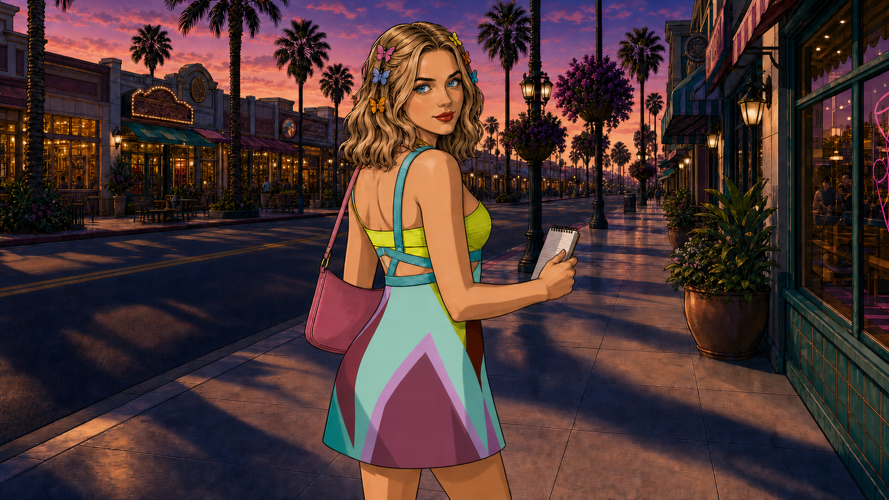

B01
assets/episodes/trailer/comic/trailer-b01-heroine-welcome-comic-v1-1920.png
SHA 1ed9306b…103ec
Internal evidence · 2026-07-26 · no public mutation
Trailer v4 is clock-correct but not admitted. Nine material heroine appearances split between a yellow-plaid host suit and a multicolour dress. The governing records do not say whether the newer B05/B14 correction is a two-beat exception or a trailer-wide rule.
Apply it to every material trailer heroine appearance. This follows the latest explicit source correction, preserves the “no Episode 4 yellow plaid” instruction, and produces one coherent host identity without changing weekly-episode wardrobe rotation.
Required: replace only B01, B04, B07, B15, B31, B39 and B56; B39 requires a successor motion source. Preserve this exact v4 tuple, build a versioned successor, then rerun the existing map/source/motion/full-title/player gates.
The older storyboard calls yellow plaid the fixed trailer host signature, but labels that choice an open question. The newer correction explicitly binds multicolour to B05/B14 and rejects Episode 4 yellow plaid at B14. Neither source defines the other seven appearances.
Smallest reversible ruling: a trailer-bounded outfit receipt. It changes no episode canon and leaves the frozen v4 bytes untouched.
Primary visual evidence


Complete conflict inventory
assets/episodes/trailer/comic/trailer-b01-heroine-welcome-comic-v1-1920.png
SHA 1ed9306b…103ec
assets/episodes/trailer/comic/trailer-b04-fourth-wall-heroine-comic-v1-1920.png
SHA 789f43ce…d456
assets/episodes/trailer/comic/delivery/heroine-blue-eyes-trailer-outfit-final/trailer-b05-reporting-back-comic-v1-1920-motion.mp4
SHA 4ffc7475…93ef

assets/episodes/trailer/comic/trailer-b07-season-arc-strip-comic-v1-1920.png
SHA 753bad69…282e

assets/episodes/trailer/comic/delivery/canonical-named-map/trailer-b14-delta-lai-nu-heroine-blue-eyes-trailer-outfit-comic-v3-1920.png
SHA b26b9eb9…1e9e

assets/episodes/trailer/comic/trailer-b15-life-in-these-streets-strip-comic-v1-1920.png
SHA ab3d013a…96b

assets/episodes/trailer/comic/trailer-b31-heroine-writing-try-on-comic-v1-1920.png
SHA 1cd762d0…34bc

assets/episodes/trailer/comic/trailer-b39-maikeover-glow-up-comic-v1-1920-motion.mp4
SHA d6c0a9fb…09ad

assets/episodes/trailer/comic/trailer-b56-sign-off-comic-v1-1920.png
SHA ecf4e700…d37d


Governing evidence

operations/trailer-comic-storyboard.md
SHA a6c1a40a…f0ae

trailer-v3-text-identity-correction-prompts.md
SHA b755759a…7a4ca

operations/reference/heroine-wardrobe/README.md and Episode 01–04 briefs
Decision set
Recommended option · exact downstream work
| Beat | Current source | Required successor | Retest |
|---|---|---|---|
| B01 | trailer-b01-heroine-welcome-comic-v1-1920.png | Identity-preserving outfit-only still edit to the exact B05/B14 dress. | Identity, outfit, text, setting, crop, source hash. |
| B04 | trailer-b04-fourth-wall-heroine-comic-v1-1920.png | Outfit-only still edit; preserve air-quotes, expression and “YOUR HEROINE.” | Text, anatomy, B04→B05 cut continuity. |
| B07 | trailer-b07-season-arc-strip-comic-v1-1920.png | Replace outfit in every heroine panel; preserve panel jobs and captions. | All-panel identity/outfit/text, strip legibility. |
| B15 | trailer-b15-life-in-these-streets-strip-comic-v1-1920.png | Replace outfit in each visible heroine panel; preserve resident-card/library/coffee continuity. | B14→B15 cut, panel identity, props/text. |
| B31 | trailer-b31-heroine-writing-try-on-comic-v1-1920.png | Outfit-only still edit; preserve iBook, table, “TRY-ON” card. | Text/tech/crop/identity and source hash. |
| B39 | trailer-b39-maikeover-glow-up-comic-v1-1920-motion.mp4 | Versioned successor transformation ending in the multicolour dress; preserve wandless abstract-stage action and exact target frame count. | Source-frame admission, semantic motion, no hard cut, decoded frames, final freeze, B39→B40 onset. |
| B56 | trailer-b56-sign-off-comic-v1-1920.png | Outfit-only still edit; preserve sign-off text, backpack, wave and town setting. | Exact text, identity, outfit, full-title ending review. |
Truth boundary
The exact frozen v4 master contains the nine shown appearances; seven are yellow plaid and two are multicolour. Their timestamps, frame numbers, source paths and source hashes bind to the exact 58-beat map. The written authority is contradictory in scope.
This package does not admit either outfit as canon, approve replacement art, prove normal-speed audible/player quality, change any source, update any route, or authorize deployment/publication. Visual stills prove wardrobe state, not motion or complete viewing quality.